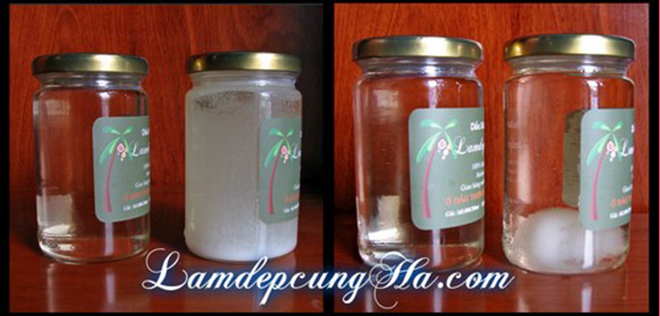

Những câu hỏi thường gặp về dầu dừa
Các chị hãy click vào câu hỏi để đi nhanh đến câu trả lời.
- Dầu dừa của Hà có uống được không?
- Có thật là dầu dừa ép lạnh tốt hơn dầu dừa thủ công?
- Da nhờn hay da hỗn hợp có dùng dầu dừa được không?
- Tóc nhờn có dùng dầu dừa được không?
- Có cần bảo quản dầu dừa trong tủ lạnh không?
- Tại sao ở nhiệt độ 21-24 độ C, để 2 chai dầu dừa cạnh nhau thì có một chai ở trạng thái chuẩn bị đông lại, một chai thì vẫn ở dạng lỏng?
- Tại sao dùng dầu dừa một thời gian mà tóc vẫn rụng?
- Tôi thấy là tóc bị rụng nhiều khi đang mát xa da đầu với dầu dừa, như vậy có phải là dầu dừa làm rụng tóc?
- Dầu dừa vào mắt có sao không?
- Dầu dừa có trị rụng tóc hay trị gàu vĩnh viễn không?
- Dùng dầu dừa trị rụng tóc hay trị gàu áp dụng bao nhiên lần mỗi tuần?
- Có nên dùng dầu xả hòa chung với dầu dừa không?
- Dầu dừa có kích thích mọc tóc không?
- Dầu dừa có làm tăng lông tay, chân hay mặt không?
- Dùng dầu dừa có tác dụng phụ không?
- Dầu dừa có làm cho da bắt nắng không?
- Có nên dùng dầu dừa thay cho kem dưỡng da không?
- Tại sao có người nói là dầu dừa có hại cho sức khỏe? Có phải chất béo bão hòa trong dầu dừa là không tốt?
- Nếu dùng dầu dừa để uống thì nên uống lượng như thế nào mỗi ngày?
- Dầu dừa của Hà có an toàn cho phụ nữa mang thai và cho con bú?
- Đun nóng dầu dừa có được không?
- Liệu khi đun nóng thì dầu dừa có chuyển thành dầu hydro hóa không?
1. Dầu dừa của Hà có uống được không?
Được. Dầu dừa của Hà được thắng trực tiếp từ trái dừa khô nguyên trái, không hề trải qua việc tẩy rửa bằng hóa chất nên có thể hoàn toàn yên tâm dùng nấu ăn hoặc uống trực tiếp.
Vì có thể ăn uống được nên dầu dừa của Hà tuyệt đối an toàn khi dùng cho da ạ.
2. Dầu dừa ép lạnh và dầu dừa thủ công của Hà loại nào tốt hơn?
Rất nhiều nghiên cứu khoa học tiến hành tại các nước chuyên sản xuất dầu dừa như Phillipines, Sri Lanka, Ấn Độ, Malaysia... đã khẳng định: dầu dừa sản xuất thủ công (dùng nhiệt) có thành phần chất chống oxy hóa cao hơn hẳn so với dầu dừa ép lạnh, vì vậy tốt hơn dầu ép lạnh. (Xem kết quả các nghiên cứu tại đây)
"Dầu dừa ép lạnh" là từ Hà dùng chung cho các loại dầu dừa sản xuất bằng công nghệ li tâm, enzyme hoặc ép nguội (không dùng nhiệt). Còn dầu dừa của Hà làm bằng phương pháp thủ công (dùng nhiệt).
3. Da nhờn hay da hỗn hợp có dùng dầu dừa được không?
Được, với điều kiện là dùng đúng cách. Các chị nên thoa một lớp thật mỏng dầu dừa lên da => mát xa 1-2 phút => dùng khăn giấy lau khô dầu dừa => rửa mặt thật kĩ với sữa rửa mặt (mẹo của Hà: rửa 2 lần, lần sau dùng ít sữa rửa mặt hơn lần đầu).
Nếu mặt còn cảm giác nhờn rít hoặc bí da thì nguyên nhân là chưa rửa sạch dầu dừa trên da.
Nhiều người nghĩ rằng da đã nhờn thì đâu cần phải thoa thêm dầu dừa nữa làm gì. Vấn đề ở đây là thoa dầu dừa không phải để bổ sung chất nhờn cho da. Vì dầu dừa có tính sát khuẩn cao, thoa dầu dừa là để diệt vi khuẩn gây mụn ở trên da, đồng thời vitamin E giúp cung cấp dinh dưỡng cho da, sau đó mới dùng sữa rửa mặt rửa sạch dầu dừa.
4. Tóc nhờn có dùng dầu dừa được không?
Được. Cũng như trong câu hỏi số 7, các chị phải dùng dầu dừa đúng cách. Nhiều người từng thấy mẹ hoặc bà của mình thoa dầu dừa trên tóc và để nguyên cả ngày để dưỡng tóc, từ đó có ấn tượng xấu rằng dầu dừa làm cho tóc bết dính nên không hợp với tóc nhờn (chưa kể khi để lâu, dầu dừa bị oxy hóa có mùi rất khó chịu). Thật ra nếu làm như vậy thì kể cả tóc khô xơ xác như rễ tre cũng trở nên vô cùng nhờn rít chứ đừng nói gì tóc nhờn ạ.
Cách dùng đúng: thoa dầu dừa lên tóc (cả phần da đầu lẫn thân tóc)=> ủ 10-15 phút hoặc lâu hơn cũng được tùy điều kiện thời gian => gội đầu thật sạch với dầu gội đầu. Nên gội 2 lần để sạch hết dầu dừa. Tóc sẽ vô cùng suôn mượt và không còn chẻ ngọn nữa.
5. Có cần bảo quản dầu dừa trong tủ lạnh không?
Không cần. Dầu dừa có thể bảo quản 6 tháng ở bên ngoài như các loại dầu ăn thông thường mà không cần tủ lạnh.
Tuy vậy nếu có tủ lạnh, chắc chắn dầu dừa sẽ giữ phẩm chất được từ 1 đến 2 năm hoặc hơn. Lưu ý là chỉ cần để ngăn mát thì dầu dừa đã đông đặc lại như sáp. Khi cần sử dụng, có thể lấy muỗng xúc ra tay hoặc dụng cụ đựng, dầu dừa sẽ tự tan chảy.
Khi trời lạnh (từ 22 đến 25.5 độ C), dầu dừa sẽ kết tinh, bắt đầu là những hạt trắng như mỡ rồi đông lại như sáp. Điều này hoàn toàn không làm ảnh hưởng gì đến chất lượng. Khi sử dụng chỉ cần dùng muỗng xúc 1 ít ra tay thì dầu dừa tự tan chảy (nhiệt độ cơ thể là 37 độ), không cần phải cho dầu dừa vào lò vi sóng cho mất công ạ.
6. Tại sao ở nhiệt độ 21-24 độ C, để 2 chai dầu dừa cạnh nhau thì có một chai ở trạng thái chuẩn bị đông lại, một chai thì vẫn ở dạng lỏng?
Đây là hiện tượng bình thường. Các nhà khoa học đã phát hiện ra rằng nhiệt độ đông đặc của dầu dừa dao động từ 22-25.5 độ C (chênh lệch 3.5 độ), chứ không phải cố định như nước là 0 độ C. Tại sao lại như vậy?
Trong dầu dừa chứa đến 10 loại axit béo, mỗi loại có nhiệt độ kết tinh khác nhau. Tùy theo tỉ lệ các axit béo trong chai dầu dừa mà nhiệt độ đông đặc của dầu dừa trong chai sẽ khác nhau. Vì dầu dừa của Hà làm thủ công, chia làm nhiều đợt nhỏ nên thành phần trong mỗi chai sẽ khác nhau chút ít. Vì vậy trong khoảng từ 22 đến 25 độ thì sẽ có chai đông đặc trước, có chai đông sau. Còn dưới 20 độ C thì mọi chai dầu dừa đều đông đặc.
Không chỉ riêng dầu dừa, tất cả các loại dầu thực vật (dầu oliu, dầu bắp...) và mỡ động vật đều có đặc tính chung như vậy (nhiệt độ đông đặc nằm trong 1 khoảng biên độ nào đó). Các chị có thể để ý hai dĩa nước kho thịt thường là có dĩa đông trước, dĩa đông sau phải không ạ?
Xem nguồn tiếng Anh tại đây ạ.
7. Tại sao dùng dầu dừa một thời gian mà tóc vẫn rụng?
Tóc rụng do nhiều yếu tố, cả bên trong lẫn bên ngoài.
- Bên ngoài: là do môi trường, nhiệt độ, hóa chất (uốn, ép, sấy, dầu gội), thói quen (dùng sai phương pháp hoặc liều lượng, cột siết tóc, chải tóc, nhổ tóc ), v.v.
- Bên trong: là do sự thay đổi của nội tiết tố như phụ nữ sau khi sinh, do uống thuốc điều trị bệnh, chế độ dinh dưỡng, v.v.
Nếu các chị dùng dầu dừa một thời gian mà tóc vẫn rụng thì lý do rất phổ biến là các chị đã thực hiện chưa đúng cách. Các chị cần phải thoa dầu dừa lên da đầu (vùng chân tóc) và mát xa thật kĩ thì dầu dừa mới thấm sâu và nuôi dưỡng chân tóc được.
Tóc là cấu trúc sừng chết, nếu chỉ thoa dầu dừa lên thân tóc thì chắc chắn tình trạng rụng không thể được cải thiện.
Sau khi mátxa cần gội lại thật kĩ với dầu gội đầu cho sạch dầu dừa (nên gội 2 lần nhé). Nếu gội không kĩ, dầu dừa còn đọng trên da đầu có thể gây ngứa và nhờn rít.
Ngoài việc dùng đúng cách, đôi khi phải kiên trì nữa. Đáp ứng của dầu dừa với mỗi người là khác nhau, có người chỉ 1 tuần đã thấy hiệu quả, có người phải 4-6 tuần. Các chị nên cố gắng dùng hết 200ml trong lọ dầu dừa ạ
Khi nguyên nhân gây rụng tóc là các yếu tố bên ngoài, nếu dùng dầu dừa đúng cách sẽ cho kết quả nhanh và khả quan hơn so với rụng tóc do các yếu tố bên trong.
Ngoài ra, do dầu dừa chứa chất chống oxi hóa toco-trienol có tác dụng cực mạnh nên trong nhiều trường hợp rụng tóc do các yếu tố bên trong, sử dụng dầu dừa vẫn có thể cải thiện tình trạng rụng tóc.
8. Tôi thấy là tóc bị rụng nhiều khi đang mát xa da đầu với dầu dừa, như vậy có phải là dầu dừa làm rụng tóc?
Khi tóc đang yếu, chân tóc ốm nên chỉ cần có lực tác động nhỏ là tóc rất dễ bị rụng khỏi da đầu. Đó là lí do mà một vài chị cảm thấy khi mát xa da đầu với dầu dừa thì tóc có thể bị rụng nhiều hơn. Những sợi tóc yếu như vậy nếu không rụng hôm nay thì vài ngày sau cũng sẽ rụng, cho nên các chị cũng đừng quá buồn phiền.
Hãy thoa dầu dừa lên da đầu nhẹ nhàng nhất có thể, và khi gội với dầu gội đầu cũng thật nhẹ nhàng. Sau một thời gian áp dụng, dầu dừa nuôi dưỡng chân tóc giúp tóc khỏe hơn , tình trạng rụng sẽ được cải thiện và tóc con sẽ mọc lên thay cho tóc cũ.
9. Dầu dừa vào mắt có sao không?
Dầu dừa của Hà là nguyên chất và có tính sát khuẩn rất tốt nên vào mắt không sao cả (có thể mắt hơi khó chịu giống như nước vào mắt thôi).
Theo kinh nghiệm của Hà thì dùng miếng bông tẩy trang thấm dầu dừa rồi chấm lên lông mi, chậm cho cả bầu mắt luôn và tán dưới bọng mắt lẫn đuôi mắt để giảm thâm mắt và giảm nếp nhăn. Các chị cũng có thể dùng tăm bông thay thế. Nếu dùng tay là dầu sẽ vào mắt ngay.
10. Dầu dừa có trị rụng tóc hay trị gàu vĩnh viễn không?
Mọi người đều rất dễ bị mê hoặc bởi 2 từ "vĩnh viễn", vì vậy các công ty thường đánh vào tâm lí này để quảng cáo: trị mụn vĩnh viễn, trị nám vĩnh viễn, trị gàu vĩnh viễn v.v. Tuy nhiên theo các chị thì có gì là "vĩnh viễn" không ạ?
Cơ thể chúng ta luôn thay đổi, tác động của môi trường cũng luôn thay đổi. Không có một sản phẩm nào giúp trị gàu vĩnh viễn, hay trị rụng tóc vĩnh viễn cả. Dầu dừa cũng không là ngoại lệ..
11. Dùng dầu dừa trị rụng tóc hay trị gàu áp dụng bao nhiên lần mỗi tuần?
Nên sử dụng 3-4 lần mỗi tuần cho 3 tuần đầu tiên. Sau đó khi triệu chứng đã giảm, tóc được cải thiện thì duy trì 1-2 lần/tuần.
Trị gàu hay trị rụng tóc là một quá trình thường xuyên liên tục (cũng như ăn no rồi đói, sau đó phải ăn tiếp), vì vậy nếu sử dụng dầu dừa thấy hiệu quả, các chị cần duy trì 1-2 lần/tuần như đã nói ở trên.
12. Có nên dùng dầu xả hòa chung với dầu dừa không?
Bản thân dầu xả đã có chất giữ ẩm nên không cần hòa chung với dầu dừa nữa vì có thể khiến tóc dễ bết dính sau khi gội.
13. Dầu dừa có kích thích mọc tóc không?
Có. Sử dụng một thời gian các chị sẽ thấy những sợi tóc con nhô lên trên đỉnh đầu, sẽ có cảm giác tóc dày hơn.
Ngoài ra, nếu muốn tăng thêm hiệu quả thì các chị hãy lấy vỏ bưởi nấu lên gội đầu 1-2 lần/tuần (có thể thêm bồ kết trái vào nếu có, không có bồ kết thì nấu vỏ bưởi thôi cũng được), luân phiên với dầu dừa. Kết quả sẽ nhanh hơn nhiều đấy
14. Dầu dừa có làm tăng lông tay, chân hay mặt không?
Tùy vào cơ địa của từng người, có người dùng dầu dừa cho cơ thể và mặt trong thời gian dài không cảm thấy "lông lá" gì cả, nhưng cũng có người thấy "violong" có vẻ "tươi tốt" hơn. Chỉ việc ngưng sử dụng dầu dừa một thời gian thì violong sẽ trở lại như bình thường thôi ạ.
15. Dùng dầu dừa có tác dụng phụ không?
Nếu dùng dầu dừa cho da, một số trường hợp có thể xuất hiện mẩn đỏ hoặc cảm giác hơi ngứa. Điều này là do cơ địa của mỗi người. Cũng có trường hợp dùng dầu dừa dưỡng da cơ thể thì hợp nhưng dùng cho da mặt lại không hợp (hoặc ngược lại), vì da mặt và da cơ thể cũng có sự khác biệt.
Nếu dùng dầu dừa để uống, vì tác dụng diệt khuẩn và kháng virus của dầu dừa nên có thể gây ra chứng tiêu chảy tạm thời. Vài ngày sau sẽ tự hết.
Khi dùng dầu dừa trị bệnh chàm, trong tuần đầu tiên có thể thấy triệu chứng khô, rát và bệnh có vẻ nặng hơn. Tuy nhiên sau một tuần, da sẽ tự bong tróc hết vảy và tình trạng bệnh sẽ được cải thiện có thể đến 80%.
16. Dầu dừa có làm cho da bắt nắng không?
Dầu dừa không làm mỏng da nên không làm cho da bắt nắng.
17. Tại sao có người nói là dầu dừa có hại cho sức khỏe? Có phải chất béo bão hòa trong dầu dừa là không tốt?
Câu trả lời thực sự cho việc tại sao người ta nói "dùng dầu dừa không tốt cho sức khỏe" vừa mang tính lịch sử, vừa liên quan đến vấn đề kinh tế.
Vào những năm 1950, người ta dùng dầu dừa đã bị hydro hóa để thực hiện nghiên cứu trên động vật. Những nghiên cứu này cho thấy tỉ lệ cholesterol trong máu những con vật thí nghiệm tăng lên và nguy cơ xơ vữa động mạch cũng tăng theo. Điều này khiến mọi người nghĩ rằng chất béo bão hòa trong dầu dừa làm tăng cholesterol và gây ra bệnh tim mạch.
Vấn đề là ở chỗ trong những thí nghiệm đó, họ đã cố ý dùng dầu dừa đã bị hydro hóa (hydrogenated coconut oil). Trước khi nói tiếp, Hà giải thích một chút về dầu dừa hydro hóa.
Nhiệt độ tan chảy của dầu dừa tự nhiên là khoảng 22-24 độ C. Những món ăn được chế biến dùng dầu dừa thì sẽ rất dễ bị chảy ra. Vì vậy người ta đã nghĩ ra cách hydro hóa dầu dừa để làm cho dầu dừa không bị tan chảy ở nhiệt độ bình thường nữa, tức là luôn ở dạng rắn. Trong quá trình hydro hóa, một số loại chất béo trong dầu dừa sẽ bị biến đổi trở thành chất béo gây hại gọi là chất béo chuyển hóa (trans fatty acid). Chất béo này là thủ phạm làm tăng mức cholesterol và là nguyên nhân của bệnh tim mạch, xơ vữa động mạch…
Trở lại vấn đề, vào những năm 1950, Mỹ là nước xuất khẩu dầu nành (đậu nành, đỗ tương – soybean) và dầu bắp nhiều nhất thế giới. Những ông chủ trong ngành công nghiệp này đã lợi dụng kết quả nghiên cứu sai lệch trên để “hạ bệ” dầu dừa và “lăng xê” cho các loại dầu thực vật mà họ đang sản xuất. Nhờ vận động hành lang mà họ được Quốc hội và Hội tim mạch Hoa Kỳ (American Heart Association) ủng hộ. Năm 1957 họ còn đưa ra chương trình Prudent Diet (tạm dịch: Thực đơn thông minh) để thay đổi cách ăn uống của cả nước Mỹ bằng cách loại bỏ 100% dầu dừa và các loại chất béo bão hòa, thay bằng các loại dầu thực vật khác. Mục tiêu của chương trình này là giảm thiểu cholesterol và các bệnh tim mạch.
Tuy nhiên sau đó thì chúng ta cũng biết, bệnh tim mạch, tiểu đường và béo phì ngày càng tăng và trở thành vấn đề xã hội không chỉ ờ Mỹ mà toàn thế giới. Việc này một phần có liên quan đến chương trình Prudent Diet của thập niên 50 ở nước Mỹ (nhiều nước trước đây chuyên sản xuất dầu dừa cũng tin rằng dầu dừa có hại và nhập các loại dầu thực vật mà Mỹ sản xuất).
Từ những năm 1980 đến nay, nhiều nghiên cứu mới được thực hiện trên dầu dừa nguyên chất đã khẳng định chất béo bão hòa trong dầu dừa hoàn toàn không làm tăng cholesterol trong máu cũng như không gây hại cho tim mạch mà ngược lại còn rất tốt cho sức khỏe và tăng sức đề kháng chống lại nhiều bệnh tật.
18. Có thể dùng dầu dừa thay cho kem dưỡng da hay không?
Dầu dừa có tác dụng dưỡng ẩm, giảm vết nhăn, trẻ hóa làn da, với một số người dầu dừa có thể làm giảm vết nám và làm trắng da. Vì vậy các chị cứ dùng thử trên da, nếu không cảm thấy bị kích ứng với dầu dừa thì có thể dùng thay kem dưỡng da.
19. Nếu dùng dầu dừa để uống thì nên uống lượng như thế nào mỗi ngày?
Tùy vào mục đích uống dầu dừa để trị bệnh gì mà các chị có liệu trình và cách uống cụ thể.
Ích lợi của dầu dừa chính là nhờ các axit béo chuỗi trung bình (CTB) có trong dầu dừa. Các axit béo này cũng có nhiều trong sữa mẹ. Một cách tương đối, người lớn có thể dùng khoảng 3 muỗng canh dầu dừa mỗi ngày (tương đương với lượng axit béo CTB mà trẻ sơ sinh nhận từ sữa mẹ). Tuy nhiên với những người chưa quen với dầu dừa thì nên bắt đầu dùng khoảng 1 muỗng canh mỗi ngày (20 ml) rồi tăng dần lên.
20. Dầu dừa của Hà có an toàn cho phụ nữa mang thai không?
Dầu dừa của Hà là nguyên chất tuyệt đối nên rất an toàn cho phụ nữ mang thai và cho con bú. Theo kinh nghiệm dân gian, thoa dầu dừa hàng ngày (sau khi tắm) giúp hạn chế những vết rạn da. Vì thế các chị hãy yên tâm dùng bôi ngoài da hoặc uống vào cơ thể.
21. Đun nóng dầu dừa có được không?
Được. Dầu dừa là một trong số ít loại dầu thực vật rất bền với nhiệt và rất an toàn cho việc nấu nướng.
22. Liệu khi đun nóng thì dầu dừa có chuyển thành dầu hydro hóa không?
Không. Phản ứng hydro hóa không xảy ra khi đun nóng dầu dừa. Phản ứng này chỉ xảy ra trong quy trình công nghiệp để làm cho dầu dừa luôn ở thể rắn ở nhiệt độ bình thường. Hoạt động hydro hóa sẽ làm cho dầu dừa biến chất và sản sinh nhiều chất béo chuyển hóa có hại cho sức khỏe.
Iu các chị, xx
Ngọc Hà
Nếu bạn thích bài viết hãy nhấn nút like:
Cùng chia sẻ bài viết này với bạn bè của mình:
DISCLAIMER: Thông tin trên LamdepcungHa.com chỉ mang tính chất tham khảo nhằm cung cấp kiến thức và hướng dẫn chung cho các chị em. Những ý kiến hay quan điểm trong các bài viết là của cá nhân Hà, không chịu sự tác động hay chi phối của công ty, tổ chức hay nhà tài trợ nào (Xem chi tiết...)
COPY RIGHT: Các bài viết và nội dung trên website này là bản quyền của LamdepcungHa.com (trừ một số bài viết Hà có ghi rõ nguồn). Hà không đồng ý việc tự ý lấy nội dung bài viết để xuất bản hoặc đăng lại trên trang web khác. Nếu anh/chị nào thực sự muốn đăng lại bài viết nào, vui lòng Xem chi tiết
Viết bình luận ( vui lòng gõ Tiếng Việt có dấu ạ):
(Feb 8, 2015) Dung đã viết:
Chị Hà ơi, vừa rồi em có mua lọ dầu dừa bên mình. Em ko biết sau khi ủ tóc bằng dầu dừa, em có thể dùng thêm serum dưỡng tóc ko (do em tóc uốn). Do trước khi ủ dầu dừa em đã mua chai serum rồi, giờ bỏ thì phí. Nhưng ko biết dùng thì có bị ảnh hưởng gì ko? Em ủ dầu dừa cách ngày nha chị.
(Jan 14, 2015) lamdepcungha (mod) đã viết:
Chị có thể dùng dầu dừa cho cả đầu luôn ạ. Sau khi dùng dầu dừa và gội đầu xong, phần tóc khô chị dùng thêm dầu xả. Phần da đầu chị dùng chanh hoặc giấm táo massage để giảm nhờn.Tóc xoăn chị dùng dầu dừa có thể giữ nếp lâu hơn đó ạ.
(Feb 8, 2015) Dung đã viết:
Chị Hà ơi, vừa rồi em có mua lọ dầu dừa bên mình. Em ko biết sau khi ủ tóc bằng dầu dừa, em có thể dùng thêm serum dưỡng tóc ko (do em tóc uốn). Do trước khi ủ dầu dừa em đã mua chai serum rồi, giờ bỏ thì phí. Nhưng ko biết dùng thì có bị ảnh hưởng gì ko? Em ủ dầu dừa cách ngày nha chị.
(Feb 8, 2015) Dung đã viết:
Chị Hà ơi, vừa rồi em có mua lọ dầu dừa bên mình. Em ko biết sau khi ủ tóc bằng dầu dừa, em có thể dùng thêm serum dưỡng tóc ko (do em tóc uốn). Do trước khi ủ dầu dừa em đã mua chai serum rồi, giờ bỏ thì phí. Nhưng ko biết dùng thì có bị ảnh hưởng gì ko? Em ủ dầu dừa cách ngày nha chị.
(Feb 8, 2015) Dung đã viết:
Chị Hà ơi, vừa rồi em có mua lọ dầu dừa bên mình. Em ko biết sau khi ủ tóc bằng dầu dừa, em có thể dùng thêm serum dưỡng tóc ko (do em tóc uốn). Do trước khi ủ dầu dừa em đã mua chai serum rồi, giờ bỏ thì phí. Nhưng ko biết dùng thì có bị ảnh hưởng gì ko? Em ủ dầu dừa cách ngày nha chị.